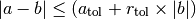

Known Issues¶
- Known deficiencies
- Quantities lose their units with some operations
- Quantities float comparison with np.isclose fails
- Quantities in np.linspace failure on numpy 1.10
- Table sorting can silently fail on MacOS X or Windows with Python 3 and Numpy < 1.6.2
- Remote data utilities in
astropy.utils.datafail on some Python distributions - mmap support for
astropy.io.fitson GNU Hurd - Bug with unicode endianness in
io.fitsfor big-endian processors - Error ‘buffer’ does not have the buffer interface in
io.fits - Floating point precision issues on Python 2.6 on Microsoft Windows
- Color printing on Windows
- Pickling error on compound models
- Build/installation/test issues
- Anaconda users should upgrade with
conda, notpip - Locale errors in MacOS X and Linux
- Creating a Time object fails with ValueError after upgrading Astropy
- Failing logging tests when running the tests in IPython
- Some docstrings can not be displayed in IPython < 0.13.2
- Installation fails on Mageia-2 or Mageia-3 distributions
- Crash on upgrading from Astropy 0.2 to a newer version
- Anaconda users should upgrade with
While most bugs and issues are managed using the astropy issue tracker, this document lists issues that are too difficult to fix, may require some intervention from the user to workaround, or are due to bugs in other projects or packages.
Issues listed on this page are grouped into two categories: The first is known issues and shortcomings in actual algorithms and interfaces that currently do not have fixes or workarounds, and that users should be aware of when writing code that uses Astropy. Some of those issues are still platform-specific, while others are very general. The second category is common issues that come up when configuring, building, or installing Astropy. This also includes cases where the test suite can report false negatives depending on the context/ platform on which it was run.
Known deficiencies¶
Quantities lose their units with some operations¶
Quantities are subclassed from numpy’s ndarray and in some numpy operations
(and in scipy operations using numpy internally) the subclass is ignored, which
means that either a plain array is returned, or a Quantity without units.
E.g.:
>>> import astropy.units as u
>>> import numpy as np
>>> q = u.Quantity(np.arange(10.), u.m)
>>> np.dot(q,q)
285.0
>>> np.hstack((q,q))
<Quantity [ 0., 1., 2., 3., 4., 5., 6., 7., 8., 9., 0., 1., 2., 3., 4.,
5., 6., 7., 8., 9.] (Unit not initialised)>
Also in-place operations where the output is a normal ndarray
will drop the unit silently (at least in numpy <= 1.9):
>>> a = np.arange(10.)
>>> a *= 1.*u.kg
>>> a
array([ 0., 1., 2., 3., 4., 5., 6., 7., 8., 9.])
Work-arounds are available for some cases. For the above:
>>> q.dot(q)
<Quantity 285.0 m2>
>>> u.Quantity([q, q]).flatten()
<Quantity [ 0., 1., 2., 3., 4., 5., 6., 7., 8., 9., 0., 1., 2., 3., 4.,
5., 6., 7., 8., 9.] m>
An incomplete list of specific functions which are known to exhibit this behavior follows.
numpy.dotnumpy.hstack,numpy.vstack,numpy.c_,numpy.r_,numpy.appendnumpy.wherenumpy.choosenumpy.vectorize- pandas DataFrame(s)
Quantities float comparison with np.isclose fails¶
Comparing Quantities floats using the numpy function isclose fails on
numpy 1.9 as the comparison between a and b is made using the formula

This will result in the following traceback when using this with Quantities:
>>> from astropy import units as u, constants as const
>>> import numpy as np
>>> np.isclose(500* u.km/u.s, 300 * u.km / u.s)
UnitsError: Can only apply 'add' function to dimensionless quantities when
other argument is not a quantity (unless the latter is all zero/infinity/nan)
An easy solution is:
>>> np.isclose(500* u.km/u.s, 300 * u.km / u.s, atol=1e-8 * u.mm / u.s)
array([False], dtype=bool)
Quantities in np.linspace failure on numpy 1.10¶
linspace does not work correctly with quantities when using numpy
1.10.0 to 1.10.5 due to a bug in numpy. The solution is to upgrade to numpy
1.10.6 or later, in which the bug was fixed.
Table sorting can silently fail on MacOS X or Windows with Python 3 and Numpy < 1.6.2¶
In Python 3, prior to Numpy 1.6.2, there was a bug (in Numpy) that caused
sorting of structured arrays to silently fail under certain circumstances (for
example if the Table contains string columns) on MacOS X, Windows, and possibly
other platforms other than Linux. Since Table.sort relies on Numpy to
internally sort the data, it is also affected by this bug. If you are using
Python 3, and need the sorting functionality for tables, we recommend updating
to a more recent version of Numpy.
Remote data utilities in astropy.utils.data fail on some Python distributions¶
The remote data utilities in astropy.utils.data depend on the Python
standard library shelve module, which in some cases depends on the
standard library bsddb module. Some Python distributions, including but
not limited to
- OS X, Python 2.7.5 via homebrew
- Linux, Python 2.7.6 via conda [1]
- Linux, Python 2.6.9 via conda
are built without support for the bsddb module, resulting in an error
such as:
ImportError: No module named _bsddb
One workaround is to install the bsddb3 module.
mmap support for astropy.io.fits on GNU Hurd¶
On Hurd and possibly other platforms flush() on memory-mapped files is not
implemented, so writing changes to a mmap’d FITS file may not be reliable and is
thus disabled. Attempting to open a FITS file in writeable mode with mmap will
result in a warning (and mmap will be disabled on the file automatically).
Bug with unicode endianness in io.fits for big-endian processors¶
On big-endian processors (e.g. SPARC, PowerPC, MIPS), string columns in FITS
files may not be correctly read when using the Table.read interface. This
will be fixed in a subsequent bug fix release of Astropy (see bug report here)
Error ‘buffer’ does not have the buffer interface in io.fits¶
For Python 2.7.x versions prior to 2.7.4, the astropy.io.fits may under
certain circumstances output the following error:
TypeError: 'buffer' does not have the buffer interface
This can be resolved by upgrading to Python 2.7.4 or later (at the time of writing, the latest Python 2.7.x version is 2.7.9).
Floating point precision issues on Python 2.6 on Microsoft Windows¶
When converting floating point numbers to strings on Python 2.6 on a Microsoft Windows platform, some of the requested precision may be lost.
The easiest workaround is to install Python 2.7.
The Python issue: http://bugs.python.org/issue7117
Color printing on Windows¶
Colored printing of log messages and other colored text does work in Windows but only when running in the IPython console. Colors are not currently supported in the basic Python command-line interpreter on Windows.
Pickling error on compound models¶
When calling pickle.dumps on a compound model, it
is possible to get an exception with a pickle.PickleError or, depending on
the Python version or whether the cPickle module was being used, an
AttributeError like:
AttributeError: 'module' object has no attribute 'CompoundModel0'
as originally reported in issue
#3867. You may also get a
RuntimeError that directed you to this documentation.
This is due to a bug in Python versions older than 2.7.3 (see
http://bugs.python.org/issue7689) that is very difficult to work around when
trying to pickle compound models. If the need is dire it may be possible
to work around by using a patched copy of the pickle module (i.e.
backporting a copy of the Python pickle module from newer Python versions
and using it instead of the copy built-in to your Python).
Build/installation/test issues¶
Anaconda users should upgrade with conda, not pip¶
Upgrading Astropy in the anaconda python distribution using pip can result
in a corrupted install with a mix of files from the old version and the new
version. Anaconda users should update with conda update astropy. There
may be a brief delay between the release of Astropy on PyPI and its release
via the conda package manager; users can check the availability of new
versions with conda search astropy.
Locale errors in MacOS X and Linux¶
On MacOS X, you may see the following error when running setup.py:
...
ValueError: unknown locale: UTF-8
This is due to the LC_CTYPE environment variable being incorrectly set to
UTF-8 by default, which is not a valid locale setting.
On MacOS X or Linux (or other platforms) you may also encounter the following error:
...
stderr = stderr.decode(stdio_encoding)
TypeError: decode() argument 1 must be str, not None
This also indicates that your locale is not set correctly.
To fix either of these issues, set this environment variable, as well as the
LANG and LC_ALL environment variables to e.g. en_US.UTF-8 using, in
the case of bash:
export LANG="en_US.UTF-8"
export LC_ALL="en_US.UTF-8"
export LC_CTYPE="en_US.UTF-8"
To avoid any issues in future, you should add this line to your e.g.
~/.bash_profile or .bashrc file.
To test these changes, open a new terminal and type locale, and you should
see something like:
$ locale
LANG="en_US.UTF-8"
LC_COLLATE="en_US.UTF-8"
LC_CTYPE="en_US.UTF-8"
LC_MESSAGES="en_US.UTF-8"
LC_MONETARY="en_US.UTF-8"
LC_NUMERIC="en_US.UTF-8"
LC_TIME="en_US.UTF-8"
LC_ALL="en_US.UTF-8"
If so, you can go ahead and try running setup.py again (in the new
terminal).
Creating a Time object fails with ValueError after upgrading Astropy¶
In some cases, have users have upgraded Astropy from an older version to v1.0
or greater they have run into the following crash when trying to create a
Time object:
>>> datetime = Time('2012-03-01T13:08:00', scale='utc')
Traceback (most recent call last):
...
ValueError: Input values did not match any of the formats where
the format keyword is optional [u'astropy_time', u'datetime',
u'jyear_str', u'iso', u'isot', u'yday', u'byear_str']
This problem can occur when there is a version mismatch between the compiled ERFA library (this is included as part of Astropy in most distributions), and the version of the Astropy Python source.
This can have a number of causes. The most likely is that when installing the
new Astropy version, your previous Astropy version was not fully uninstalled
first, resulting in a mishmash of versions. Your best bet is to fully remove
Astropy from its installation path, and reinstall from scratch using your
preferred installation method. How to remove the old version may be a simple
matter if removing the entire astropy/ directory from within the
site-packages directory it is installed in. However, if in doubt, ask
how best to uninstall packages from your preferred Python distribution.
Another possible cause of this, in particular for people developing on Astropy
and installing from a source checkout, is simply that your Astropy build
directory is unclean. To fix this, run git clean -dfx. This removes
all build artifacts from the repository that aren’t normally tracked by git.
Make sure before running this that there are no untracked files in the
repository you intend to save. Then rebuild/reinstall from the clean repo.
Failing logging tests when running the tests in IPython¶
When running the Astropy tests using astropy.test() in an IPython
interpreter some of the tests in the astropy/tests/test_logger.py might
fail, depending on the version of IPython or other factors.
This is due to mutually incompatible behaviors in IPython and py.test, and is
not due to a problem with the test itself or the feature being tested.
Some docstrings can not be displayed in IPython < 0.13.2¶
Displaying long docstrings that contain Unicode characters may fail on some platforms in the IPython console (prior to IPython version 0.13.2):
In [1]: import astropy.units as u
In [2]: u.Angstrom?
Out[2]: ERROR: UnicodeEncodeError: 'ascii' codec can't encode character u'\xe5' in
position 184: ordinal not in range(128) [IPython.core.page]
This can be worked around by changing the default encoding to utf-8
by adding the following to your sitecustomize.py file:
import sys
sys.setdefaultencoding('utf-8')
Note that in general, this is not recommended, because it can hide other Unicode encoding bugs in your application. However, in general if your application does not deal with text processing and you just want docstrings to work, this may be acceptable.
The IPython issue: https://github.com/ipython/ipython/pull/2738
Installation fails on Mageia-2 or Mageia-3 distributions¶
Building may fail with warning messages such as:
unable to find 'pow' or 'sincos'
at the linking phase. Upgrading the OS packages for Python should fix the issue, though an immediate workaround is to edit the file:
/usr/lib/python2.7/config/Makefile
and search for the line that adds the option -Wl,--no-undefined to the
LDFLAGS variable and remove that option.
Crash on upgrading from Astropy 0.2 to a newer version¶
It is possible for installation of a new version of Astropy, or upgrading of an
existing installation to crash due to not having permissions on the
~/.astropy/ directory (in your home directory) or some file or subdirectory
in that directory. In particular this can occur if you installed Astropy as
the root user (such as with sudo) at any point. This can manifest in
several ways, but the most common is a traceback ending with ImportError:
cannot import name config. To resolve this issue either run sudo chown -R
<your_username> ~/.astropy or, if you don’t need anything in it you can blow
it away with sudo rm -rf ~/.astropy.
See for example: https://github.com/astropy/astropy/issues/987
| [1] | Continuum says this will be fixed in their next Python build. |